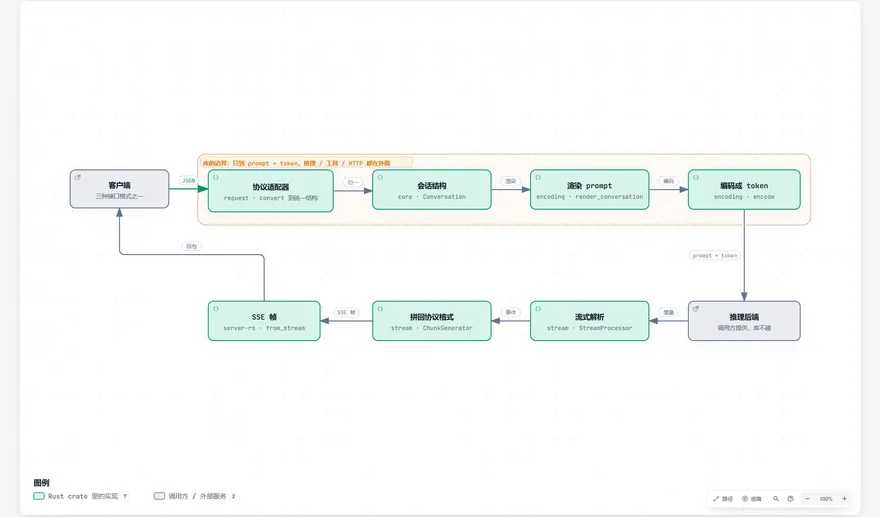
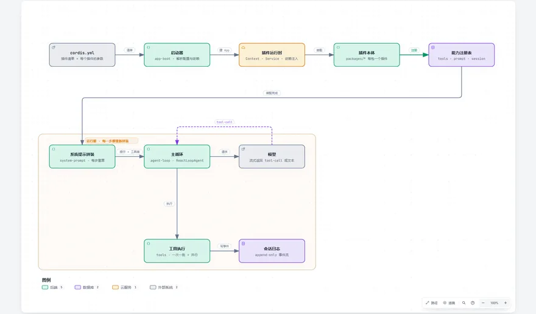
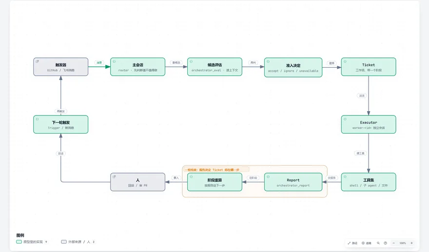

Agent 与工具 3
Agents & Tools · 让模型自己动手的那一层

deepseek-recipedeepseek-ai/deepseek-recipe
deepseek-recipe converts OpenAI, Anthropic and Responses formats into one conversation structure.

DeepSeek Harnessdeepseek-ai/deepseek-harness
In DeepSeek Harness even the agent loop and the system prompt are plugins.

dsh-superagentdeepseek-ai/dsh-superagent-prototype
dsh-superagent decides whether to accept a task, works in its own directory, and reports progress each turn.